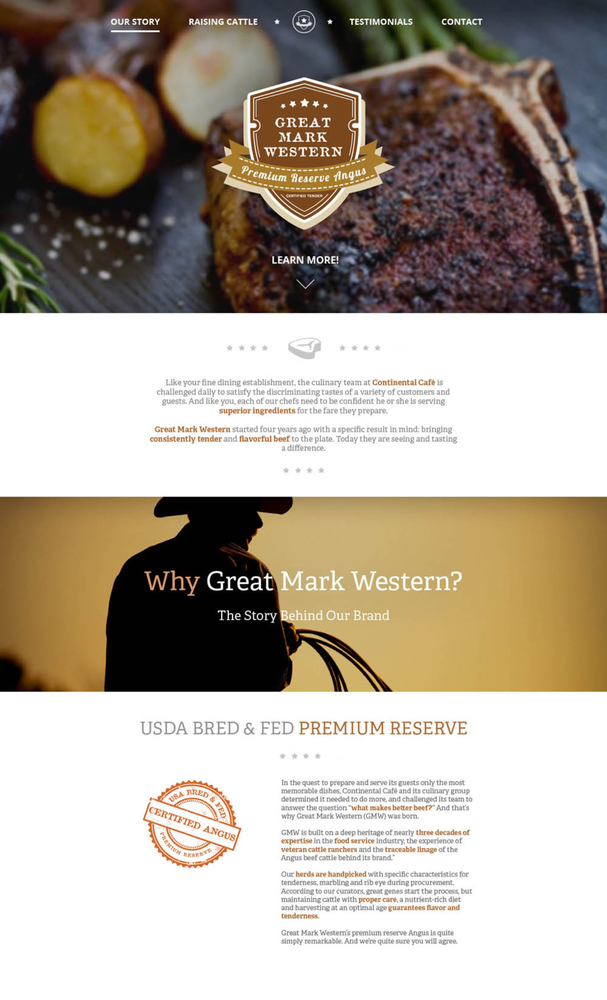
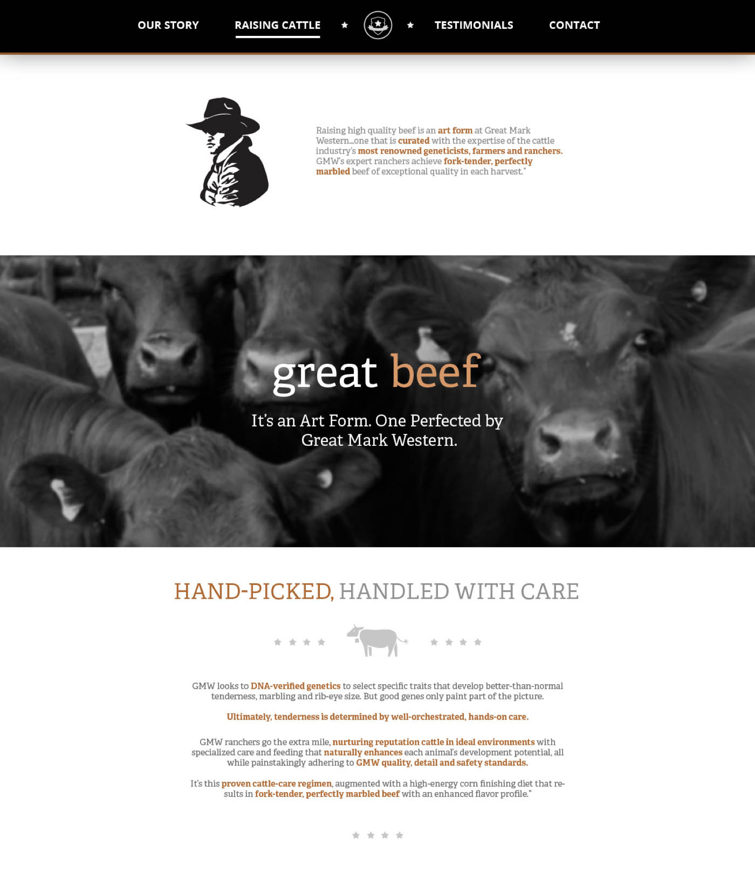
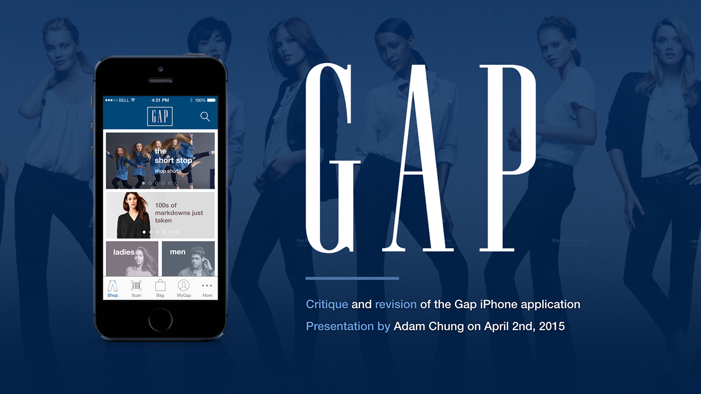
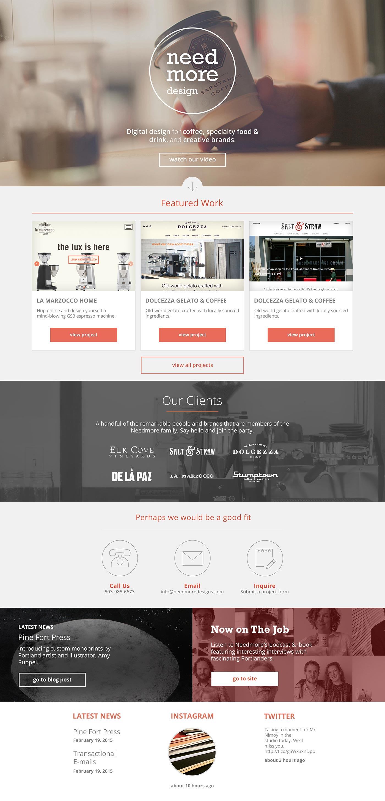

I was tasked with creating the new site for Great Mark Western, a branch of Continental Catering Services. As the purpose of the site was to sell meat, we went with a rustic theme that emphasized naturally bred cows and a local feel.


Friendly Ghost Studio
My first portfolio site made as a young, Padawan designer. I was really into ghosts at the time for some reason.
Spec Project: Gap Mobile App Redesign
As a UI/UX exercise for a job interview, I redesigned the Gap iPhone app, which at the time was in dire need of an upgrade. The app was hindered by pages that were too long, important features or content that were not given proper emphasis, and clunky navigation. There was also a lack of recognition of their core demographic of cost-conscious shoppers, which I tried to address through a personalized sales notification page.

Spec Project: Chat Plugin Concept
As a UI exercise, I did a design of a chat plugin interface that online customer support reps could use. I thought about how I could visually indicate the waiting times (and subsequent frustration) of customers through the warmness or coolness of the chat boxes.
Needmore Design
I was asked to create a quick redesign of Needmore Design’s website. As they wanted to attract more luxury brands at the time, I focused on making the site more airy and elegant.

Kareo Success Summit
Landing page for Kareo's annual user conference. We went for a baseball theme for 2019.